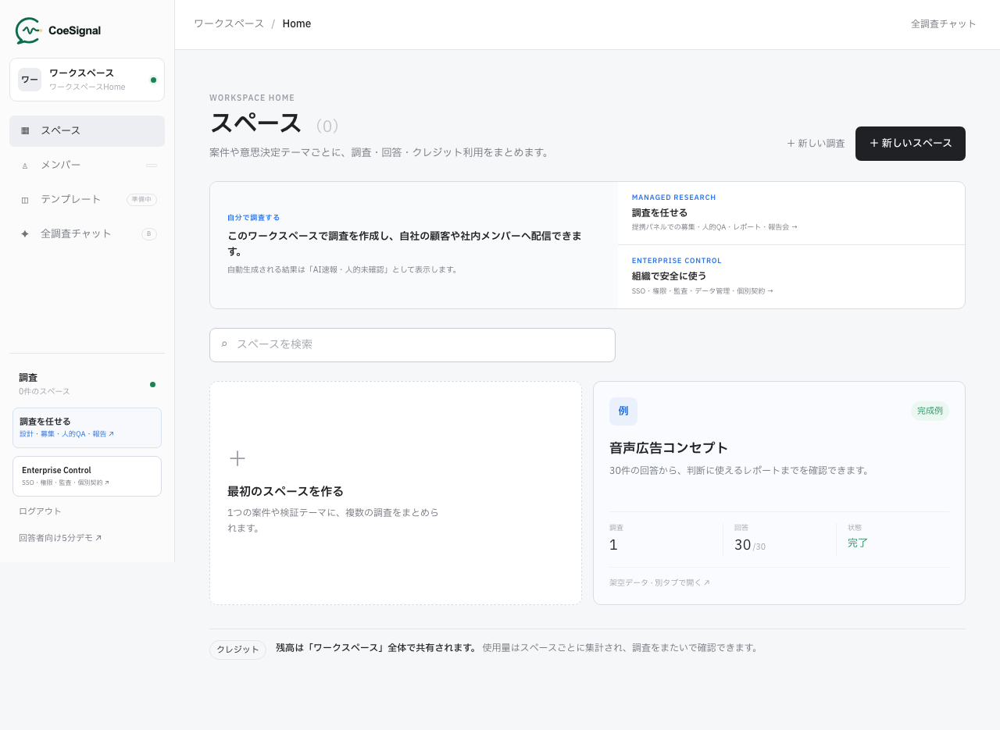

- 「従業員にAIがインタビューする」取り組みは、SHIFT約5,200人・トリドール（丸亀製麺）約3万人・豪CPL2,700人など、既に全社員規模の公開事例がある。
- 成果を分けるのは回答数ではなく構造化。自由な発言をテーマ・リスク・合意対立・アクションに整理し、経営が動ける形にした事例が結果を出している。
- 共通するのはAIと人の役割分担。AIが全員から一貫して聞き、人は経営判断・個別フォロー・実装テーマの選定に集中する。評価用途では人による最終判断が必須になる。
本記事は各社の公開情報（プレスリリース・公式記事）を元に構成した市場事例の整理です。各取り組みは各社独自またはそれぞれのツールによるもので、当社サービスの導入事例ではありません。出典はすべて記事末尾の参考文献から一次情報を確認できます。
社内AIインタビューとは何か？
AIが社員一人ひとりと対話して深掘りし、回答を構造化する取り組み。国内外で公開事例が既に10件ある。
従業員サーベイは多くの会社が実施しています。しかし決まった設問への一往復の回答では、スコアの分布は分かっても「なぜそのスコアなのか」は残りません。自由記述欄を設けても、書く負荷が高いために多くは空欄か一言で終わります。
この「一往復の壁」を越える手段として広がり始めたのが、AIが社員一人ひとりにインタビューする取り組みです。AIが回答に応じて「それはいつ頃からですか」「具体的にはどの場面ですか」と追質問し、集まった発言をテーマや論点に構造化して、人事や経営に渡します。サーベイの置き換えではなく、サーベイでは拾えない「理由」と「文脈」を全員から集める仕組みです。
本記事での「類似度」の見方
一口に「社内AI活用」と言っても中身は幅があるため、本記事では各事例に類似度ラベルを付けて整理します。
| 類似度 | 意味 |
|---|---|
| A＝同型 | AIが社員と直接対話・追質問し、複数人の回答を構造化・可視化する |
| B＝近接 | インタビュー自体は人が行い、AIが記録・分析・構造化を担う |
| C＝参考 | AIが直接インタビューするが、主目的は人材評価 |
AIインタビューという手法そのものの仕組み（追質問の設計・構造化の考え方）は、AIインタビューとはで基礎から解説しています。本記事は「社内向け」に絞り、公開事例10件を順に見ていきます。
国内ではどんな公開事例があるか？（7選）
SHIFT約5,200人・トリドール約3万人など、全社員規模の運用例が既に国内で公開されている。
まず10事例の全体を一覧で示します。国内7件・海外3件、いずれも各社が公開している一次情報に基づきます。
| 企業・取り組み | 対象規模 | 類似度 | 公開されている成果の要点 |
|---|---|---|---|
| SHIFT「mentai」 | 約5,200人 | A | 114種の悩み要因を可視化。対話を有用とした社員79%・AIとの1on1実施率約95% |
| トリドールHD／丸亀製麺 | 約3万人（全店舗従業員） | A | 8言語対応。外国人スタッフの定着率向上につながったと公表（改善幅は非公開） |
| サイボウズ「いどばたシステム」 | 約50人 | A | ワークショップ参加者約50人の本音を5分で可視化 |
| 共立コンピューターサービス「ココボイス」PoC | 一部社員→全社員に展開 | A | 匿名アプリ上でAIが本音を深掘りし、経営陣へレポート |
| PeopleX（自社検証） | 入社1・3・6カ月の入社者 | A | 面談リードタイムを大幅短縮と公表（定量値は未公表） |
| 富士通「AImインタビュー分析アプリ」 | 12用途50件超で検証 | B | 30分のインタビューを約3分で構造化、従来比15%の工数 |
| 日本管財HD／日本管財 | 係長級→課長級の昇格審査 | C | 小論文を対話型AI面接に置換。試験から結果確認までを短縮 |
| CPL「Lee」（豪） | 2,700人（全従業員） | A | 四半期ごとの継続対話を2年間運用。参加が継続的に増加 |
| Judo Bank「JEDI」（豪） | 毎週のウェルビーイング確認 | A | 回答を37の論点に分類しリアルタイムダッシュボード化 |
| Burns & McDonnell × Qualtrics（米） | 自由回答へのAI追質問 | A | 同機能の初期導入群では従来手法より最大40%多く価値ある洞察（※単社の数値ではない） |
1. SHIFT「mentai」——約5,200人と対話し、114種の悩み要因を可視化（類似度A）
ソフトウェアテストのSHIFTが公開している「mentai」は、AIメンターが社員一人ひとりと約10分対話し、悩みや言語化されていない感情を深掘りする取り組みです。回答はタグ化・定量化され、人事・管理職の介入につながります。
公開されている数字が具体的です。約5,200人と対話して114種の悩み要因を可視化し、対話を有用とした社員は79%、フィードバックを有用とした社員は75%。AIとの1on1の実施率は約95%に達しています。人による1on1を全社員に同じ頻度・同じ品質で行うのは現実的に難しいため、「全員と定期的に対話する」部分をAIが担う構図です。
注目すべきは離職予兆に関する報告で、低スコアで退職者を捉える割合が従来のES調査の約3倍になったとしています。設問固定のサーベイより、対話で深掘りしたスコアのほうが退職リスクを早く捉えた、という結果です。
2. トリドールHD／丸亀製麺——約3万人を対象に、8言語で幸福度を可視化（類似度A）
丸亀製麺を運営するトリドールホールディングスの「ハピネススコアインタビュー」は、AIが全店舗従業員を対象に音声で対話し、幸福度や潜在的な不満を可視化する取り組みです。対象は約3万人。いきなり本題に入らず雑談から入って心理的安全性をつくる設計が公表されています。
進め方も参考になります。全体展開の前に3回のPoCを実施し、600人超の声を反映してから広げています。飲食の現場はPCの前に座る仕事ではなく、多国籍のスタッフが働く環境です。8言語対応により、外国人スタッフの定着率向上につながったと公表されています（改善幅は非公開）。
「デスクレスの現場・数万人・多言語」という、従来の面談やサーベイが最も届きにくかった領域で運用されている点が、この事例の意味です。
3. サイボウズ「いどばたシステム」——約50人の本音を5分で可視化（類似度A）
サイボウズが公開している「いどばたシステム」は、AIチャットで社員の意見を集め、重要論点・合意点・対立点を即時抽出するワークショップです。約50人の本音を5分で可視化したとされています。
この事例の面白さは、継続的なサーベイではなく「その場の議論」への適用である点です。50人が一斉に発言すれば、通常は声の大きい人の意見が場を支配します。全員がAIに並行して話し、AIが論点と対立軸を整理することで、「全員が発言し、かつ構造化されて返ってくる」会議が成立します。数百人規模の組織でなくても、1つの会議体から始められる型として参考になります。
4. 共立コンピューターサービス「ココボイス」PoC——匿名対話で本音を経営陣へ（類似度A）
アイティフォーが提供する「ココボイス」は、匿名のスマホアプリ上で生成AIが社員と対話して本音を深掘りし、AIが分析・レポート化して経営陣に届けるサービスです。共立コンピューターサービスでのPoCは、一部社員から始めて全社員へ展開されています。
提供会社は2025年のPoC全体で約300人規模を検証し、不満だけでなく前向きな改善アイデアも引き出せたと公表しています。「本音を聞く＝不満を集める」と思われがちですが、匿名で深掘りすると建設的な提案も出てくる、という報告は導入を検討する側にとって示唆があります。匿名性を仕組みで担保している点も、後述する導入時の注意点の観点で参照価値があります。
5. PeopleX——入社後フォロー面談をAI化し、人事は要フォロー者に集中（類似度A）
HRのPeopleXは、入社1・3・6カ月のフォローアップ面談をAIが実施する自社検証を公開しています。AIが面談を行い、入社者の状態をスコア化・構造化。面談のリードタイムを大幅に短縮したと公表しています（定量値は未公表）。
ポイントは人事の時間の使い途が変わることです。全入社者との面談日程調整と実施をAIが担うことで、人事はスコアが示す「要フォロー者」への個別対応に集中できます。オンボーディングは「全員に同じタイミングで聞く」ことに価値がある領域で、AIインタビューの型と噛み合いのよいユースケースです。
6. 富士通「AImインタビュー分析アプリ」——30分の記録を約3分で構造化（類似度B）
富士通の「AImインタビュー分析アプリ」は、類似度Bの事例です。インタビュー自体は人が行い、その文字起こしを生成AIが7項目に構造化します。30分のインタビューを約3分で約1,800字に構造化し、工数は従来比15%（＝85%削減）。12用途50件超で検証し、社内展開されています。
「AIが聞く」事例ではありませんが、社内インタビュー活用のボトルネックが実査ではなく後工程（文字起こしと整理）にあること、そこをAIが桁違いに圧縮できることを、具体的な数字で示した事例として並べる価値があります。聞くのはAIでも人でも、構造化の工程が回らなければ声は活用されません。
7. 日本管財HD——昇格試験の小論文を対話型AI面接に置換（類似度C）
日本管財ホールディングス／日本管財は、係長級から課長級への昇格審査で、小論文を対話型AI面接に置き換えると公表しています。2025年9月に試験導入、2026年4月に本導入。評点・ランク・出現率をレポート化し、試験から結果確認までの期間を短縮するとしています。
これは類似度C——主目的が人材評価の事例です。エンゲージメント把握とは目的が異なりますが、「AIが社員に直接インタビューする」ことが評価という重い用途でも制度に組み込まれ始めた事実を示しています。同時に、評価用途には固有の論点が伴います。AIの評点をそのまま合否にする設計は、評価理由の説明責任と人による最終判断を欠くと成立しません。この線引きは導入時の注意点で改めて扱います。
海外ではどんな公開事例があるか？（3選）
豪CPLは2,700人と四半期ごとに2年間対話。米ではQualtricsがサーベイにAI追質問機能を組み込んだ。
海外では、単発の実験ではなく継続運用のフェーズに入った事例が公開されています。
8. CPL「Lee」（豪）——2,700人の全従業員と四半期ごとに対話、2年間運用（類似度A）
オーストラリアの障害福祉サービス企業CPLは、2,700人の全従業員に会話型AI「Lee」を展開しています。入社時から退職時まで、四半期ごとに継続対話する設計で、2年間運用されています。
公開情報で示されているのは、従業員・管理職・取締役会の参加が継続的に増加している点です。この種の仕組みは初回の回答率より「2年目も答えてもらえるか」が難しく、聞かれた声が実際に使われている実感がなければ参加は減っていきます。従業員だけでなく管理職・取締役会の関与まで増えているという報告は、聞きっぱなしにしない運用が回っていることの傍証です。福祉という感情労働の現場で、退職時までのライフサイクル全体を対話でカバーしている点も特徴です。
9. Judo Bank「JEDI」（豪）——毎週のパルス確認をAIが深掘り、37論点に分類（類似度A）
オーストラリアのJudo Bankの「JEDI」は、毎週SMSでウェルビーイングを確認し、気になる回答には会話型AI「EVE」が理由を深掘りする仕組みです。回答は37の論点に分類され、リアルタイムダッシュボードに反映されます。
この事例が示すのは「頻度と深さの両立」です。毎週聞くパルスサーベイは変化を早く捉えられる一方、設問を絞るため理由が分かりません。スコアの変化をトリガーにAIが会話で理由を聞きに行くことで、高頻度の定点観測と深掘りが1つの仕組みに収まっています。自由な発言を固定の論点体系（37論点）に落としてダッシュボード化する構造化の設計も、そのまま参考になります。
10. Burns & McDonnell × Qualtrics——曖昧な自由回答にその場でAIが追質問（米・類似度A）
米エンジニアリング企業Burns & McDonnellは、QualtricsのConversational Feedback（会話型フィードバック）を利用しています。従業員サーベイの自由回答が曖昧なとき、AIがその場で追質問して具体化する機能です。
Qualtricsは、同機能の初期導入群では従来手法より最大40%多く価値ある洞察を取得したと公表しています。注意が必要なのは、この40%は初期導入群全体の結果であり、Burns & McDonnell単社の改善率ではない点です。既存サーベイ製品側が「一往復で終わらせない」方向に機能を拡張してきたこと自体が、社内の声の収集がインタビュー型に寄っていく流れを示しています。
10事例に共通する成功パターンは何か？
規模でなく構造化が成果を分ける。全員に聞き、AIが整理し、人が判断に集中する役割分担が共通する。
10件を横断すると、成果を出している取り組みには3つの共通点があります。
パターン1：「全員に聞く」は既に現実的
SHIFT約5,200人、トリドール約3万人、CPL2,700人。かつて「全社員との面談」は物理的に不可能でしたが、AIが聞き手になることで、規模の制約は公開事例のレベルで既に外れています。サンプリングした一部の声ではなく全員の声を前提に設計できることは、「聞かれなかった人がいない」という納得感の面でも効いてきます。
パターン2：成果は回答数ではなく構造化で決まる
各事例が成果として公表しているのは「何人が答えたか」ではありません。SHIFTは114種の悩み要因へのタグ化、サイボウズは重要論点・合意点・対立点の抽出、Judo Bankは37論点への分類とダッシュボード化、富士通は7項目への構造化。つまり、自由な発言をテーマ・リスク・合意対立・アクションへ構造化し、経営が動ける形にするところまでが成果物です。集めた声が議事録のまま眠る設計では、規模を上げても意思決定は変わりません。
パターン3：AIだけで完結させない
どの事例も、AIの役割は「全員から一貫した品質で聞き、整理する」ところまでです。SHIFTでは可視化された悩みに人事・管理職が介入し、PeopleXでは人事が要フォロー者への対応に集中し、ココボイスではレポートを受けた経営陣が動きます。AIが聞き、人が判断しフォローする——この役割分担を崩して「AIが答えまで出してくれる」と期待した設計は、10件の公開事例のどれとも違う姿です。
3つをまとめると、社内AIインタビューの型は「全員に聞ける規模 × 経営が動ける構造化 × 人が判断に集中する役割分担」。ツール選定より先に、この3点を自社でどう成立させるかを設計するのが順番として正しい。
導入時に何に気をつけるべきか？
匿名性の設計、評価利用との線引き、人による最終判断。この3つを導入前に決めることが分かれ目になる。
事例が示すのは可能性だけではありません。社内の声を扱う以上、設計を誤ると「本音を聞く仕組み」が「本音が消える仕組み」に変わります。導入前に決めておくべき論点は3つです。
1. 匿名性と開示範囲を先に明文化する
回答が誰にどう見えるのかが曖昧なままだと、社員の発言は慎重になります。ココボイスが匿名アプリという形を取り、トリドールが雑談から入って心理的安全性をつくる設計を公表しているのは、この論点への各社なりの答えです。匿名で集めて集計・要約で経営に渡すのか、記名で個別フォローにつなげるのか——どちらにも合理性がありますが、回答者に事前に明示されていることが絶対条件です。途中でルールを変えると信頼は戻りません。
2. エンゲージメント目的と評価目的を混ぜない
「率直に話してほしい」と言って集めた声が人事評価に使われるなら、誰も率直には話しません。組織課題の把握を目的とする仕組みと、日本管財の事例のような評価を目的とする仕組みは、目的・データの流れ・本人への説明を別立てにすべきです。1つの仕組みに両方を載せる設計は、どちらの目的も損ないます。
3. 評価用途では説明責任と人の最終判断を外さない
昇格審査のような評価用途にAI面接を使う場合、AIの分析結果を人事上の最終判断として自動利用する前提にしないことが必須です。本人に「なぜその評価か」を説明できること、レポートを踏まえて人が最終判断を下すプロセスを制度に組み込むこと。この2つを欠いたまま自動化だけを進めると、制度への納得感が崩れ、訴求力のあった「短縮」の効果も帳消しになります。
CoeSignalはこの流れの中でどこに位置づくか？
事例の中心は組織サーベイ領域。CoeSignalは同じ仕組みを業務実態の把握とAI活用テーマの発見に使う。
ここまでの10事例の中心は、従業員エンゲージメント・離職予兆・組織課題・オンボーディング・昇格審査——つまり人事・組織領域でした。「AIが社員一人ひとりに聞き、構造化して経営に渡す」というアプローチ自体は、これらの公開事例によって既に実証されつつあります。
当社が提供するAIインタビュープラットフォーム「CoeSignal」は、この実証済みの「AIによる社員理解」の仕組みを、業務の実態把握と、AI活用・業務改善テーマの発見・優先順位づけに向ける設計です。エンゲージメントスコアの代わりに、「どの業務に時間が溶けているか」「どこで手作業と待ちが発生しているか」「現場は何から自動化してほしいか」を全員から声で集め、改善テーマとして構造化します。組織の状態を測る社内AIインタビューに対して、業務とAI活用の打ち手を決めるための社内AIインタビュー、という位置づけです。
なお、社内調査で気になりやすい音声データの扱いについて、CoeSignalの社内調査では音声を保存しません。文字起こし後に音声は削除する方針を公開しています。

図：CoeSignalのワークスペース画面（内容はデモデータ）。調査の作成から回答の構造化までを1つの画面で扱う。
社内調査そのものの設計——誰に何を聞くか、匿名性をどう扱うか、音声データをどう扱うか——は、従業員の本音をAIインタビューで聞くで詳しく扱っています。
よくある質問
サーベイは決まった設問への一往復の回答で、分布は分かりますが理由までは残りません。AIインタビューは回答に応じて追質問し、「なぜそう感じたか」を言葉のまま集めてから構造化します。SHIFTの公開事例では、低スコアで退職者を捉える割合が従来のES調査の約3倍になったと報告されており、スコアの背景にある文脈まで拾えることが差になっています。両者は置き換えではなく、分布の把握と理由の深掘りで役割を分けて併用するのが実務的です。
公開事例の範囲では、話される傾向が示されています。SHIFTでは対話を有用とした社員が79%、AIとの1on1実施率は約95%と公表されています。トリドールの取り組みは雑談から入って心理的安全性をつくる設計、ココボイスのPoCは匿名アプリ上で対話する設計で、いずれも話しやすさを仕組み側で担保しています。ただし、回答が誰にどう見えるかの説明が曖昧なままだと発言は慎重になるため、匿名性と利用目的の明示が前提条件になります。
公開事例の対象規模は、サイボウズのワークショップの約50人から、トリドール（丸亀製麺）の約3万人まで幅があります。トリドールは3回のPoCで600人超の声を反映してから対象を広げ、ココボイスも一部社員から全社員へ展開しています。最初から全社導入する必要はなく、部署や拠点を絞った小規模な検証から始めて、聞き方と結果の使い方を固めてから広げる進め方が事例の共通パターンです。
自動で確定させる設計は避けるべきです。日本管財の事例はAI面接の結果を評点・ランク・出現率のレポートとして扱うもので、評価用途では「なぜその評価になったか」を説明できることと、人による最終判断を挟むことが必須になります。エンゲージメント目的で集めた声を本人の同意なく評価に転用すると、以後の回答から本音が消えるため、目的と利用範囲の線引きを先に明文化しておくことが導入の前提です。
参考文献
本文で取り上げた事例の一次情報は以下のとおりです（本文での登場順）。
- SHIFT AI「mentai」導入事例. 公式サイト（SHIFT AI）
- SHIFT公式note「mentai」に関する記事. 記事ページ（SHIFT公式note）
- アルサーガパートナーズ プレスリリース（トリドールHD／丸亀製麺「ハピネススコアインタビュー」）. プレスリリース（アルサーガパートナーズ）
- サイボウズ「AIツールと私たちの働き方」（いどばたシステム）. 公式サイト（サイボウズ）
- アイティフォー「ココボイス」プレスリリース. プレスリリース（PR TIMES）
- アイティフォー ニュースリリース（ココボイス・共立コンピューターサービスPoC）. 公式サイト（アイティフォー）
- PeopleX セミナー告知（入社後フォローアップ面談のAI化・自社検証）. 公式サイト（PeopleX）
- 富士通公式note「AImインタビュー分析アプリ」. 記事ページ（富士通公式note）
- 日本管財ホールディングス ニュースリリース（昇格試験へのAI面接導入）. 公式サイト（日本管財HD）
- Evolved Thinking, Customer Story: CPL「Lee」. 事例ページ（Evolved Thinking）
- Evolved Thinking, Blog: Judo Bank「JEDI」. 記事ページ（Evolved Thinking）
- Qualtrics, X4 2026 発表（Conversational Feedbackを含む新EX機能）. ニュースページ（Qualtrics）